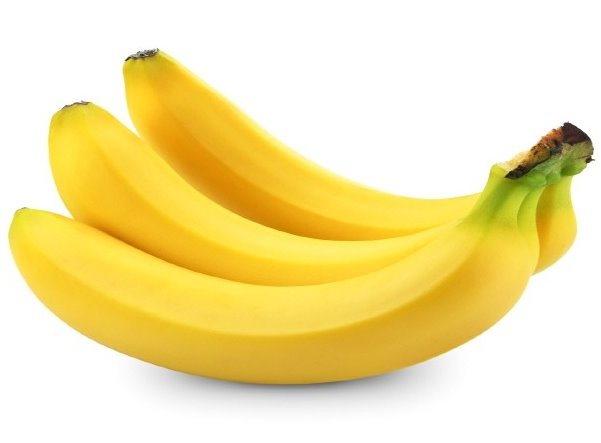

외떡잎식물 생강목 파초과 바나나속에 속하는 식물의 총칭으로, 흔히 이 식물의 열매를 바나나버내너라고 한다. 참고로 흔히 바나나 나무라는 말을 많이 쓰지만, 사실은 나무가 아니라 여러해살이 풀이다.[1] 열매인 바나나를 채취하고 난후, 바나나 풀의 줄기를 잘라줘야 다시 성장하는데 도움이 된다. 아마 열대지방에서 멀리 떨어진 내륙지역에 사는 사람들에게 있어서 바나나는 그들이 알고 있는 열대과일 중에서도 제일 익숙한 과일일 것이다. 열매로서의 바나나는 일반적으로 과일로 분류된다. 바나나가 초본, 즉 나무가 아니라 풀인 점을 들어 채소라는 주장이 있는데 그렇다고 하더라도 한국어에서 '과일'이라 함은 ‘나무나 초본에 열리는, 사람이 먹을 수 있는 열매’를 가리키므로 과일이라 칭해도 무방하다. 식물학적으로는 씨방 혹은 연관된 기관이 발달한 열매를 가리키며 식용 불가능한 것도 포함되므로 범위가 더 넓다. 고추도 과일이자 채소 식물학적으로도 바나나는 과일이며, 과일의 분류[2]중에서는 장과에 속한다. 농업용어사전에서도 과일은 ‘종자식물의 꽃이 정받이를 한 후, 자방이 자라서 익은 것. 과일이라 함은 과실 중에서 식용할 수 있는 것’이라 하여 초본을 배제하지는 않는다. 결론적으로 말하면 과일인지 채소인지의 여부는 사회·문화·관습적 구분이며, 대한민국의 경우 관세법, 부가가치세법시행규칙, 국어사전에서 바나나를 과일로 분류하였다. 미국 농무부에서는 바나나를 식용 과일(edible fruit)로 분류하였으며[3], 유엔 식량 농업 기구(FAO)에서도 과일로 분류하였다.#
